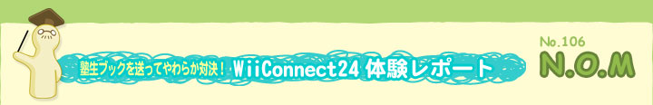
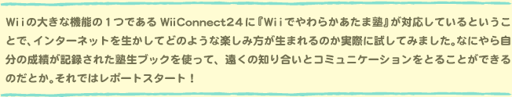
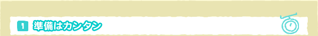
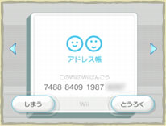
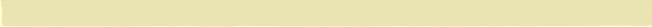
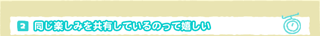

|  |


|  |
レポート時期がまだソフトの発売前だったので、今回は、任天堂のN.O.M担当者と塾生ブックの交換を試してみました。
まずはおたがいをＷｉｉフレンド登録するために、それぞれのＷｉｉ本体に設定された16ケタのＷｉｉ番号を教えあいます。ここではパソコンのメールを使っておたがいの番号をやりとりして、Ｗｉｉ伝言板のアドレス帳に入力です。
しばらくすると、任天堂の担当者からＷｉｉ番号登録終了の連絡がありました。Ｗｉｉ伝言板のアドレス帳を見てみると確かに薄いグレーで書かれていた名前がはっきりと黒い文字に。これが、Ｗｉｉフレンド登録が完了した証拠。今後はＷｉｉ同士で、気軽に直接メッセージのやりとりができるわけです。 |
 |
それではさっそく、こちらから挨拶代わりの塾生ブックを送ってみることに。『Ｗｉｉでやわらかあたま塾』を立ち上げ、「事務局」から画面の指示にしたがい、送信。
さて、次の日、用事を済ませて家に戻ると、Ｗｉｉ伝言板に１通のメッセージが届いている模様。どれどれ……。 |
|  |
|  |
 メッセージは任天堂のN.O.M担当者から塾生ブックが送られてきたことを知らせる内容でした。『Ｗｉｉでやわらかあたま塾』を起動しなくても、Ｗｉｉ伝言板で塾生ブックが届いたことが分かるのは便利かも。 メッセージは任天堂のN.O.M担当者から塾生ブックが送られてきたことを知らせる内容でした。『Ｗｉｉでやわらかあたま塾』を起動しなくても、Ｗｉｉ伝言板で塾生ブックが届いたことが分かるのは便利かも。
Ｗｉｉフレンドの塾生ブックは細かい成績まで見ることができて、まだ見たことのない「あたまタイプ」だったりするのが興味津々です。廊下にある成績表にもＷｉｉフレンドの成績が反映されています。
初回はかろうじてこちらの成績が上でしたが、しばらくすると、こちらを上回る成績が送られてきたり。これは油断できないぞとレッスンにも力が入ります。
届いた塾生ブックとは「たいせんレース」で対決することも可能です。それぞれの塾生ブックにはＷｉｉフレンドの“クセや傾向”も記録されているので、苦手なジャンルではうっかりミスをしたりと、なかなかリアルな対戦が楽しめます。
やわらかテストで良い成績が出たときだけじゃなく、面白いあたまタイプになったときに送ってみるのも盛り上がりそう。塾生ブックを使ったコミュニケーション、まだまだ楽しみ方が拡がりそうです。 |
|
|
 |
|
|